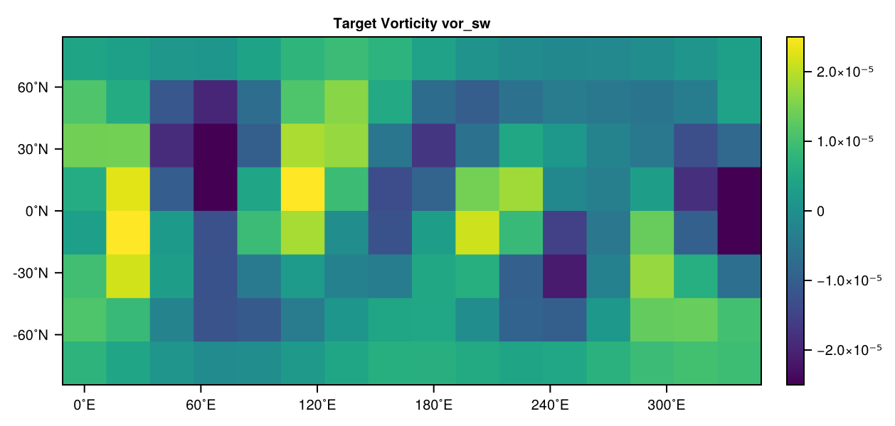
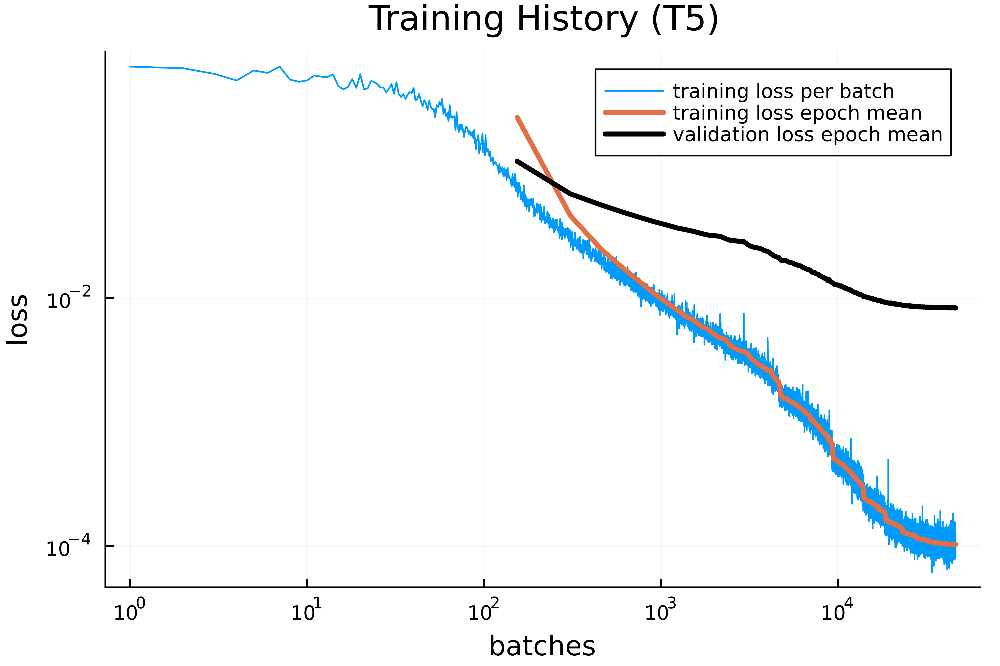

Running SpeedyWeatherEmulator.jl
This section introduces the core functionality of the package. After a short review of the basic workflow it provides a step-by-step overview of how to generate simulation data, format it for training, build and train an emulator, saving/loading data, and evaluate its performance.
For the plots in this chapter, a separate, slightly modified script was used. If you are particularly interested in this details, you can find the exact code used for plot creation in the repository folder plot_utils/docs_plots_running_SWE.
Basic Workflow
This brief introduction to the workflow is meant to illustrate how the different steps, functions, and data types of the package interact. I have deliberately omitted details such as additional functions, parameters, or default values. These can be found in the sections below, seen in action in the examples or looked up in the source code.
Every workflow in SpeedyWeatherEmulator.jl begins by defining the simulation parameters in a SimPara object. These parameters control the spectral truncation, the number of datapoints to be stored per i.c., the number of independent initial conditions and more:
sim_para = SimPara(trunc=5, n_data=24, n_ic=800, id_key="_basic_workflow")With these parameters defined, raw vorticity data is generated using SpeedyWeather.jl and stored on disk.
generate_raw_data(sim_para)The raw files are then loaded into a SimData container, which provides a consistent array layout. From this, formatted datasets are built, splitting the vorticity time series into train/validation/test pairs.
sim_data = SimData(sim_para)
fd = FormattedData(sim_data)Next, a neural network architecture is defined and trained on the formatted data. This produces both an Emulator (the trained model) and a Losses object that tracks training progress.
nn = NeuralNetwork()
em, losses = train_emulator(nn, fd)After the training, the mean relative error and max relative error for one step are printed to STDOUT:
--------------------------------------
Mean relative error: 3.528 %
Max relative error: 6.673 %
--------------------------------------The recorded losses can then be visualized:
plot_losses(losses)Finally, we can visually compare emulator predictions with SpeedyWeather.jl outputs. Here we select one vorticity state (vor0), its SpeedyWeather forecast (vorSW), and the emulator’s prediction (vorEM) after six steps. This corresponds to a six hour forecast:
vor0 = fd.data_pairs.x_test[:,10,1]
vor_sw = fd.data_pairs.y_test[:,10+6,1]
# Calculate emulator vorticity
vor_em = vor0
for _ in 1:6
global vor_em = em(vor_em)
endEach of them can be visualized as a heatmap,
colorrange = (-2.5e-5, +2.5e-5)
plot_heatmap(vor0, trunc=5, title="Initial Vorticity vor0", range=colorrange)
plot_heatmap(vor_sw, trunc=5, title="Target Vorticity vor_sw", range=colorrange)
plot_heatmap(vor_em, trunc=5, title="Emulated Vorticity vor_em", range=colorrange)resulting in:


The difference between the initial vorticity and the final vorticity is small, but it can be seen that the emulator already approximates the target SpeedyWeather.jl data reasonably well.
Generating and Formatting Data
Before training a emulator, we need to generate and structure data. This process has three steps: defining the simulation parameters, running SpeedyWeather.jl to create raw data, and finally preparing formatted datasets for machine learning.
Simulation Parameters
Every workflow begins by specifying the simulation setup in a SimPara object. This struct collects the essential parameters of a barotropic SpeedyWeather.jl simulation:
- the spectral truncation (
trunc, e.g. T5), - the number of stored timesteps after spin-up (
n_data), - the number of independent initial conditions (
n_ic), - and additional metadata such as spin-up length, timestep size, or a unique
id_key.
Together, these parameters determine both the structure of the generated data. For example:
sim_para = SimPara(trunc=5, n_data=50, n_ic=200, id_key="_test1")It should be emphasized that only the fields used in the example above are responsible for saving and loading data. In general, it is recommended not to rely solely on the identifiers trunc, n_data, and n_ic, but to always provide an additional id_key as well! See Saving/Loading Data for details.
Furthermore, there are additional simulation parameters with default values, summarized as follows:
SimPara{F}
├ trunc::Int
├ n_data::Int
├ n_ic::Int
├ n_spinup::Int = 9
├ t_step::Float32 = 1.0
├ initial_cond::F = nothing
└ id_key::String = ""For example, a custom initial condition can be defined, or the time step can be adjusted.
Generating Raw Data
With the simulation parameters defined, raw data can be generated directly from SpeedyWeather.jl:
generate_raw_data(sim_para; overwrite=true)This command creates a folder with one subdirectory per initial condition and stores the corresponding raw simulation output. If raw data with the same simulation parameters already exist and overwrite = false, data generation is aborted.
Generating raw data can be slow and memory-intensive (few gigabytes), since not only vorticity but also other prognostic variables (output of diagnostic variables is disabled) are written to disk. It should therefore be used sparingly, ideally only when new datasets are absolutely required! Instead, it is strongly recommended to use SimData objects (few megabytes) as often as possible. Furthermore, problems may arise if one attempts to delete the raw data within the same session in which they were generated.
Structured Simulation Data
In order to make use of raw data, it must be loaded into a SimData object, which is handled by a convenience constructor:
sim_data = SimData(sim_para)The resulting tensor has dimensions $\text{data} \in \mathbb{R}^{(2 \cdot n_\text{coeff}) \times n_\text{data} \times n_\text{ic}}$ where real and imaginary parts of the spectral coefficients are stacked along the first axis. This format is optimized for efficient slicing over time and initial conditions, and serves as the basis for all later steps. It also consumes significantly less memory than the previous raw data and can be easily handled using the methods from Saving/Loading Data.
Preparing Formatted Data
For machine learning, we need to turn the discrete time series into input–target pairs. The FormattedData constructor automates this process by pairing consecutive timesteps:
\[(x, y) = \bigl( \mathrm{vor}(t), \, \mathrm{vor}(t + \Delta t) \bigr)\]
Then it splits the dataset into training, validation, and test sets. By default, the split is 70 % training, 15 % validation, and 15 % test:
fd = FormattedData(sim_data) # results in splits=(train=0.7, valid=0.15, test=0.15)However, arbitrary alternative splits can also be used. The convenience constructor internally handles non-unique splits by normalization:
fd = FormattedData(sim_data, splits=(train=100, valid=50, test=50)) # results in splits=(train=0.5, valid=0.25, test=0.25)Since the targets are shifted forward in time, the total number of datapairs available is (n_data − 1) * n_ic.
Training
Once the data pipeline is established, we can train a neural network to emulate the barotropic SpeedyWeather.jl model. This involves defining an architecture, normalizing the data, building an emulator, training it on input–output pairs, and finally comparing predictions against reference data.
Neural Network Architecture
The emulator uses a simple feed-forward neural network with ReLU activations. The architecture is described by a NeuralNetwork object, which specifies the input/output dimension, the hidden layer dimension (width), and the number of hidden layers (depth).
nn = NeuralNetwork(io_dim=54, hidden_dim=128, n_hidden=2)This compact container makes it easy to experiment with different model sizes without touching the actual Flux code.
Normalizsation by Z-Score
Since the spectral coefficients have different orders of magnitude, each of them are seperately normalized before training using a Z-score transformation:
\[z_i = \frac{x_i - \mu_i}{\sigma_i},\]
where $\mu_i$ is the mean and $\sigma_i$ the standard deviation of the ith spectral coefficient in the training set. This is achieved with a ZscorePara struct, which stores the mean and standard deviation of the training set. Normalization is always based only on the training data to avoid information leakage. The emulator applies this transformation automatically when called.
The Emulator Wrapper
The Emulator struct
Emulator{F, A<:AbstractVector{Float32}}
├ sim_para::SimPara{F}
├ chain::Flux.Chain
└ zscore_para::ZscorePara{A}bundles three pieces of information:
- the simulation parameters of the dataset,
- the neural network chain built from Flux,
- the Z-score normalization parameters.
This design keeps the metadata and the trained model tightly coupled. For convenience, an emulator can be used like a function:
y_pred = em(x)where x is a spectral coefficient tensor at time t and the output is the emulator prediction at t + t_step. The first dimension of x must equal the input/output dimension of the NeuralNetwork of em().
Furthermore, Emulator automatically handles moving data to the GPU (if available) and back to the CPU.
Logging Training Progress
During training, losses are automatically collected in a Losses object. It stores the mean-squared errors for each batch of the training and validation sets, and also the time used for training (training_time) in seconds. This makes it straightforward to plot learning curves and diagnose overfitting.
Training the Emulator
The central routine is train_emulator, which orchestrates the entire process:
- Compute Z-score parameters from the training set.
- Build an
Emulatoraccording to the chosen architecture. - Normalize training and validation data.
- Train with a Adam optimizer, starting with a given learning rate that halves every 30 epochs.
- Record training and validation losses batch-by-batch.
- Reinitializes the
Lossesobject with the needed training time - Evaluate the trained emulator on the test set.
At the end, train_emulator prints rel. error statistics of the test set to STDOUT:
--------------------------------------
Mean relative error: 13.041 %
Max relative error: 62.957 %
--------------------------------------and returns both the trained emulator and its recorded loss history with training time.
A typical training run looks like this:
em, losses = train_emulator(nn, fd; batchsize=64, n_epochs=100, η0=0.0005)Training times should be treated with caution. In order to compare the training times of different hyperparameters, a warm-up training must first be performed, since the initial training always takes longer.
Evaluating Accurarcy
To quantify performance, the function compare_emulator applies the trained model to unseen test inputs and compares the predictions against SpeedyWeather.jl reference outputs. It optionally reports mean and maximum relative errors in percent, and can optionally display the error of each spectral coefficient separately. The function also returns the overall average error, which is useful for automated evaluation. compare_emulator is also used in train_emulator on the test set.
compare_emulator(em;
x_test=fd.data_pairs.x_test,
y_test=fd.data_pairs.y_test,
all_coeff=true,
output=true)compare_emulator can also be used to compare multiple emulator steps (rollouts) by specifying the argument n_it:
compare_emulator(em;
x_test=fd.data_pairs.x_test,
y_test=fd.data_pairs.y_test,
n_it = 3) # corresponds to the comp. of em(em(em()))Saving/Loading Data
Training an emulator often requires repeating experiments with different network architectures or datasets. To make results reproducible and avoid re-running costly simulations, SpeedyWeatherEmulator.jl provides simple functions for saving and reloading data containers using JLD2.
Unified File Paths
All saved objects — whether SimData, Emulator, or Losses — are uniquely identified by their simulation parameters (SimPara). The helper functions data_path and delete_data ensure that every dataset receives a consistent folder or file name:
- Raw data are stored in dedicated folders with one subfolder per run.
- All other types (
SimData,Emulator,Losses) are saved as single.jld2files.
The file name includes truncation trunc, number of data points n_data, number of initial conditions n_ic, and a optional key id_key, e.g.
data/sim_data/sim_data_T5_ndata50_IC200_ID_demo.jld2In general, it is recommended not to rely solely on the identifiers trunc, n_data, and n_ic, but to always provide an additional id_key as well!
Saving Data
Any supported container (SimData, Emulator or Losses) can be saved with a single call:
save_data(sim_data)
save_data(em; overwrite=true)In the second case existing data will be overwritten. By default, all data are stored in
SpeedyWeatherEmulator.jl/data
├ emulator
├ losses
└ sim_data
└ sim_data_T5_ndata50_IC200_ID_demo.jld2where sim_data_T5_ndata50_IC200_ID_demo.jld2 is an example of an stored SimData object.
It is also possible to specify a custom path:
save_data(sim_data, path = myPath)If data with the same simulation parameters already exist and overwrite = false (default), saving is aborted. No functions were defined for directly saving and loading raw data, since the storage structure is more complex than that of JLD2. However, this is not really necessary due to the existence of SimData.
Loading Data
Previously saved objects can be reloaded at any time:
sim_data_loaded = load_data(SimData, sim_para)
em_loaded = load_data(Emulator, sim_para)Here, the first argument specifies the object type to be loaded, and sim_para serves as the identifier of which one. A custom path can also be chosen again with path = myPath, from which the data will be loaded.
The function returns the object in its original type, making it seamless to continue training, evaluate a stored emulator, or plot old loss curves.
Visualization
After training an emulator, it is often useful to visualize its performance and inspect vorticity heatmaps. SpeedyWeatherEmulator.jl provides a small set of plotting functions for these purposes. The plotting routines are intentionally kept simple: apart from an optional title, almost no additional styling parameters are exposed, in order to keep the interface clear and focused.
Loss Curves
The function plot_losses visualizes the training history stored in a Losses object. It displays:
- the raw training loss per batch (log–log scale),
- the mean training loss per epoch,
- the mean validation loss per epoch.
This makes it easy to diagnose whether the network is converging properly and whether overfitting occurs.
plot_losses(losses; title="Training History (T5)")
The number of epochs is inferred automatically from the batch size and dataset split. The returned plot object can be further customized or saved using the standard Plots.jl interface.
Vorticity Heatmaps
To inspect actual states of vorticity, the function plot_heatmap reconstructs a vorticity field from a spectral coefficient vector and shows it as a heatmap. This requires specifying the spectral truncation to interpret the coefficient layout correctly. With the argument range = (a, b) the color range of the heatmap can be adjusted:
vec = rand(Float32, 54) # random coeffs for trunc=5
plot_heatmap(vec; trunc=5, title="Random Vorticity Field", range=(-2.5,+2.5))Internally, the coefficients are converted into a lower-triangular matrix and then transformed into a physical-space grid. The resulting heatmap provides an intuitive view of the spatial vorticity pattern represented by the spectral state.